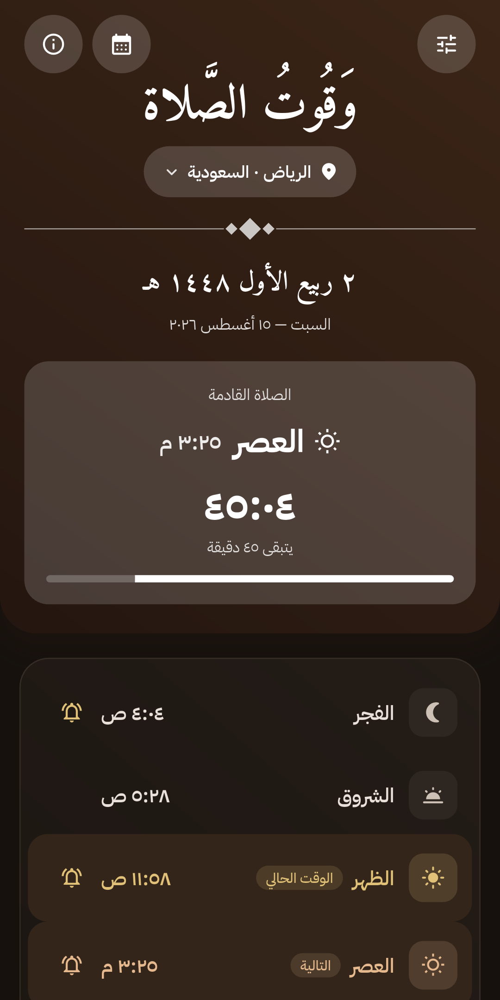
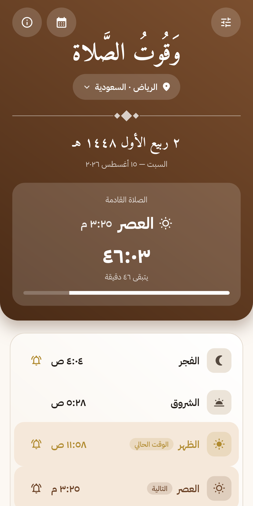
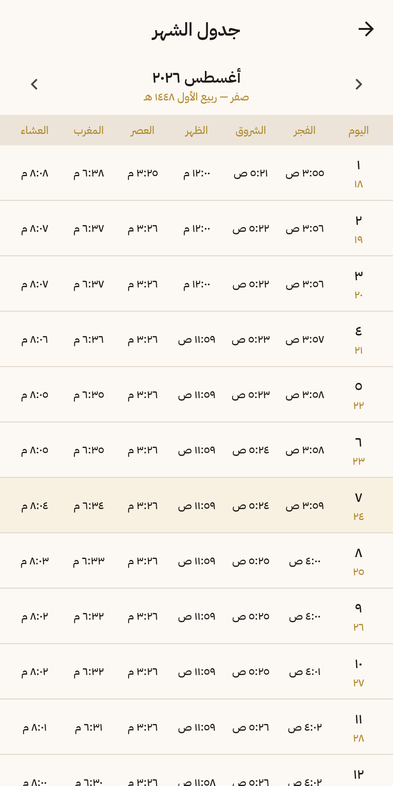
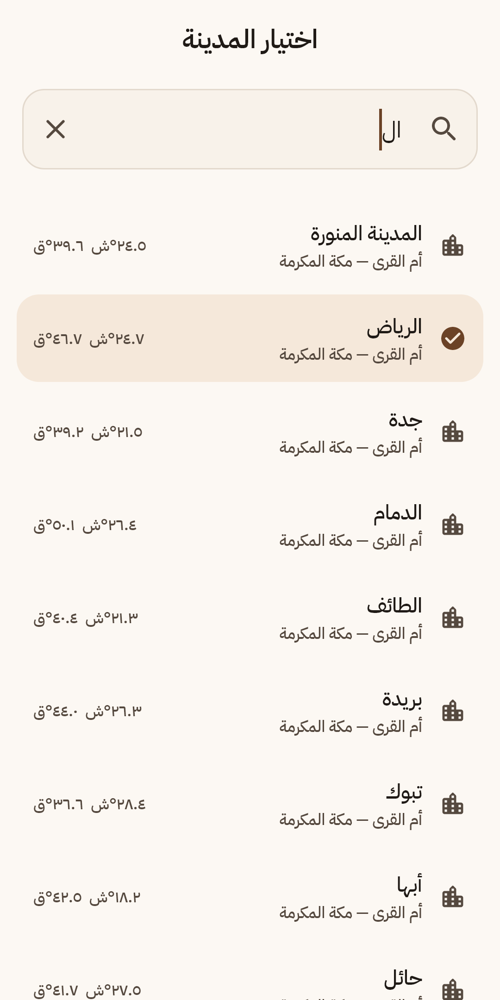
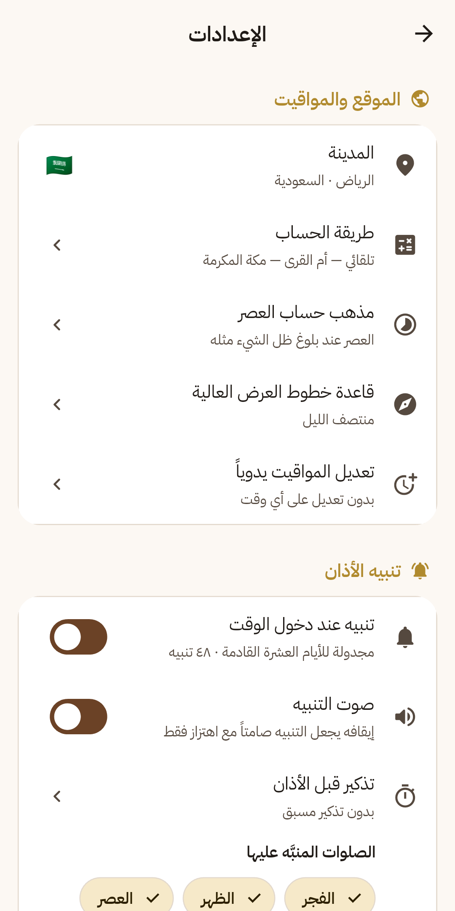
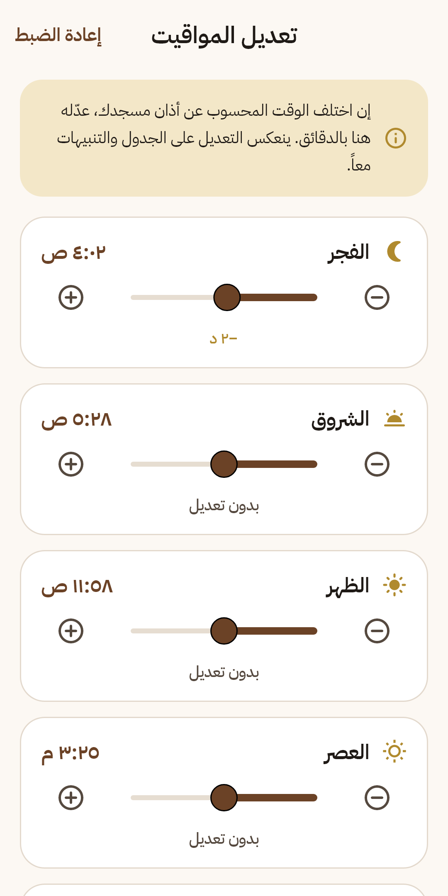

تطبيق عربي · يعمل بلا إنترنتArabic app · works fully offline
وَقُوتُ الصَّلاة
Wqoot
مواقيت الصلوات الخمس والشروق، والتاريخ الهجري، وتنبيه الأذان — محسوبة
فلكياً على جهازك نفسه. بلا اتصال، بلا حساب، بلا إعلانات، بلا تتبّع.
The five daily prayers and sunrise, the Hijri date, and adhan alerts —
computed astronomically on your own device. No connection, no account,
no ads, no tracking.
أكثر من ١٨٠ مدينة180+ citiesأذان وتذكير مسبقAdhan & early reminderتقويم أم القرىUmm al-Qura calendarأداة شاشة رئيسةHome screen widget
مجاني بالكامل · بلا مشتريات داخل التطبيق · حجم صغيرFree · no in-app purchases · small download


١٨٠+180+مدينة مضمّنةcities bundled
١٢12طريقة حساب معتمدةcalculation methods
لا شيء0من طلبات الإنترنتnetwork requests
لا شيء0من بياناتك يُجمعbytes of data collected
◆
كل ما تحتاجه لمواقيتك
Everything your timetable needs
مصمَّم بلغة تطبيقَي «الأربعون النووية» و«حصن المسلم»: واجهة عربية كاملة من اليمين إلى اليسار، بخطي «أميري» و«IBM Plex Sans Arabic».
Built in the same design language as the Nawawi's Forty and Hisn al-Muslim apps: a fully right-to-left Arabic interface set in Amiri and IBM Plex Sans Arabic.
حساب فلكي على الجهاز
Astronomical, on device
الصلوات الخمس مع الشروق تُحسب داخل الجهاز نفسه، فيعمل التطبيق كاملاً في الطائرة وفي الصحراء وفي أي مكان بلا شبكة.
The five prayers plus sunrise are computed inside the device, so the app works in full on a plane, in the desert, anywhere without a signal.
أكثر من ١٨٠ مدينة
More than 180 cities
بحث عربي يتجاهل التشكيل ويوحّد الهمزات، فتصل إلى مدينتك سواء كتبت «القاهره» أو «القاهرة». وتُحسب كل مدينة بتوقيتها المحلي ولو كان جهازك في بلد آخر.
An Arabic search that ignores diacritics and normalises hamza spellings. Each city is computed in its own time zone, so the times stay right even when your phone is elsewhere.
طريقة الحساب تلقائياً
The right method, chosen for you
تُختار حسب دولة المدينة: أم القرى، المصرية، رابطة العالم الإسلامي، كراتشي، دبي، الكويت، قطر، ديانت، سنغافورة، ISNA وغيرها — مع إمكانية تغييرها يدوياً، ومذهب العصر (الجمهور/الحنفي).
Picked from the city's country: Umm al-Qura, Egyptian Authority, Muslim World League, Karachi, Dubai, Kuwait, Qatar, Diyanet, Singapore, ISNA and more — overridable at any time, with the Asr madhab too.
تعديل يدوي دقيق
Fine tuning
عدّل كل وقت من −٦٠ إلى +٦٠ دقيقة لمطابقة تقويم مسجدك، فينعكس على الجدول والتنبيهات معاً. والتاريخ الهجري يُعدَّل ±٣ أيام.
Shift any prayer by −60 to +60 minutes to match your mosque's calendar; the change applies to both the timetable and the alerts. The Hijri date shifts ±3 days.
الأذان في وقته
The adhan, on time
تنبيه عند دخول كل وقت، وتذكير اختياري قبله من ٥ إلى ٣٠ دقيقة، وكتم أي صلاة على حدة. تُجدول التنبيهات بخصائص المنبّه، وتُعاد جدولتها بعد إعادة تشغيل الجهاز.
An alert as each time enters, an optional reminder 5–30 minutes before, and per-prayer muting. Alerts run on an alarm-grade channel and reschedule themselves after a reboot.
التاريخ الهجري
The Hijri date
تقويم أم القرى بأسماء الأشهر العربية، ويظهر التاريخان الهجري والميلادي معاً في الشاشة الرئيسة.
The Umm al-Qura calendar with Arabic month names, shown alongside the Gregorian date on the home screen.
جدول الشهر كاملاً
A month at a glance
مواقيت الشهر كله في جدول واحد، مع إبراز اليوم الحالي وتمييز أيام الجمعة.
A full month of prayer times in a single table, with today highlighted and Fridays marked.
أداة الشاشة الرئيسة
Home screen widget
أداة قابلة لتغيير الحجم تعرض الصلاة القادمة والوقت المتبقي ومواقيت اليوم كاملة، دون فتح التطبيق.
A resizable widget showing the next prayer, the countdown to it, and today's full timetable without opening the app.
◆
من داخل التطبيق
Inside the app
مظهر فاتح وداكن يتبع النظام، ونظام ١٢ أو ٢٤ ساعة، وأرقام هندية عربية.
Light and dark themes that follow the system, a 12 or 24 hour clock, and Eastern Arabic numerals.
الصلاة القادمة والعدّ التنازليNext prayer and countdown

جدول مواقيت الشهرThe monthly timetable

اختيار المدينة والبحث العربيCity picker and Arabic search

الإعدادات وطرق الحسابSettings and methods

التعديل اليدوي ±٦٠ دقيقةManual ±60 minute tuningالمظهر الداكنThe dark theme
◆
افتتح الإمام مالك بن أنس رحمه الله «الموطأ» بـ«كتاب وُقُوت الصلاة»، و«الوُقُوت» جمع وقت — ومن هنا اسم التطبيق.
Imam Malik ibn Anas opened his Muwatta with "Kitab Wuqut as-Salah". "Wuqut" is the plural of "waqt", a time — and the app takes its name from it.
في تسمية التطبيق
On the name
لا يعرف عنك شيئاً
It knows nothing about you
ليست وعداً تسويقياً: نسخة الإصدار لا تطلب إذن الإنترنت أصلاً، ولا يوجد في شفرة التطبيق أي عميل شبكة ولا حزمة إعلانات ولا تحليلات.
Not a marketing promise: the release build does not even request the internet permission, and the source contains no network client, no ad SDK and no analytics.
لا يجمع أي بيانات ولا يرسل شيئاً إلى أي خادم.Collects no data and sends nothing to any server.
لا يطلب إذن الموقع — أنت تختار مدينتك بنفسك.Never asks for location — you pick your city yourself.
لا حسابات ولا تسجيل دخول.No accounts, no sign-in.
لا إعلانات ولا تتبّع ولا مشتريات داخل التطبيق.No ads, no tracking, no in-app purchases.
إعداداتك تبقى على جهازك، وتُحذف مع حذف التطبيق.Your settings stay on your device and vanish when you uninstall.
الأذونات الوحيدة: الإشعارات والمنبّهات الدقيقة والتشغيل بعد الإقلاع والاهتزاز.The only permissions: notifications, exact alarms, run at boot, vibrate.
ملاحظة شرعية. المواقيت محسوبة فلكياً بالطرق المعتمدة، وقد تختلف دقائق معدودة عن تقويم مسجدك. اعتمد على أذان مسجدك عند الاختلاف، أو استعمل التعديل اليدوي لمطابقته.
A note on accuracy. Prayer times are astronomical calculations using established methods, and may differ by a few minutes from your mosque's calendar. Follow your mosque's adhan where they differ, or use the manual adjustment to match it exactly.